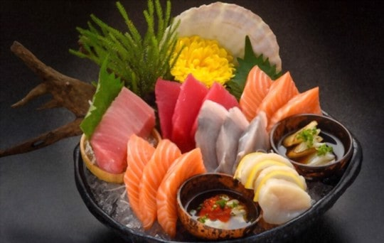

Sushi

What is Sashimi?
Sashimi is a Japanese dish of thinly-sliced raw food, usually fish and seafood, but also sometimes other meats.
Popular Types of Sashimi
- Katsuo (Bonito / Skipjack Tuna
- Sake (Salmon)
- Maguro (Bluefin Tuna)
Steps to prepare
- Get fish
- Wash wish
- Slice fish
- Serve
Back to Home